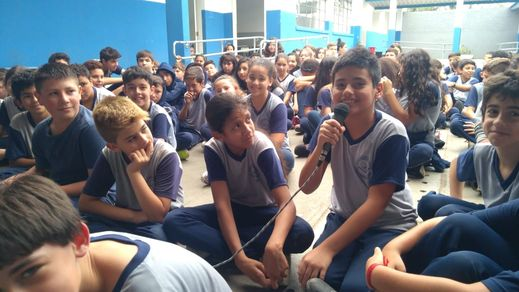
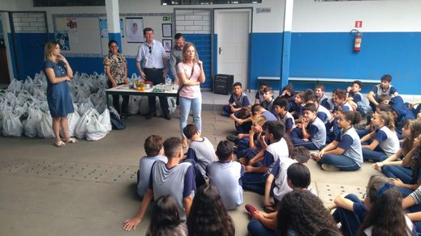

Ceasa da palestra sobre alimentação
Teve um dia que vieram palestrantes do ceasa no colégio , onde os estudantes foram convidados a participar de uma roda de conversas sobre segurança alimentar e nutricional. Eles também ofereçeram para nós sacolas cheias de verduras , para demonstrar como nós deviamos nos alimentar de forma correta.Neste mesmo dia teve alunos que foram sorteados a não levarem somente um sacola com verduras , mas também um cesta com outros alimentos como feijão,arroz,bolacha,macarrão entre outros alimentos.
Quartel do Boqueirão
Teve uma vez que eu fui em um passeio escolar no quartel do Boqueirão , onde neste passeio chegamos a visitar uma sala cheia de armas antigas , armas estas que eram datatadas do século XVIII . Também vimos o campo de treinamento onde os soldados treinavam tiro ao alvo , além de vermos um desfile de tanques de guerra que os soldados nos proporcionaram .Aquele foi um dia inesquecível.
Data e Local
- Data da visita do Ceasa: 21/10/2019
- Data da visita ao Quartel: 16/07/2018
- Local da visita do Ceasa: Colégio Estadual São Sebastião, no bairro Umbará, em Curitiba
- Local da visita ao Quartel: Boqueirão, Curitiba - PR  